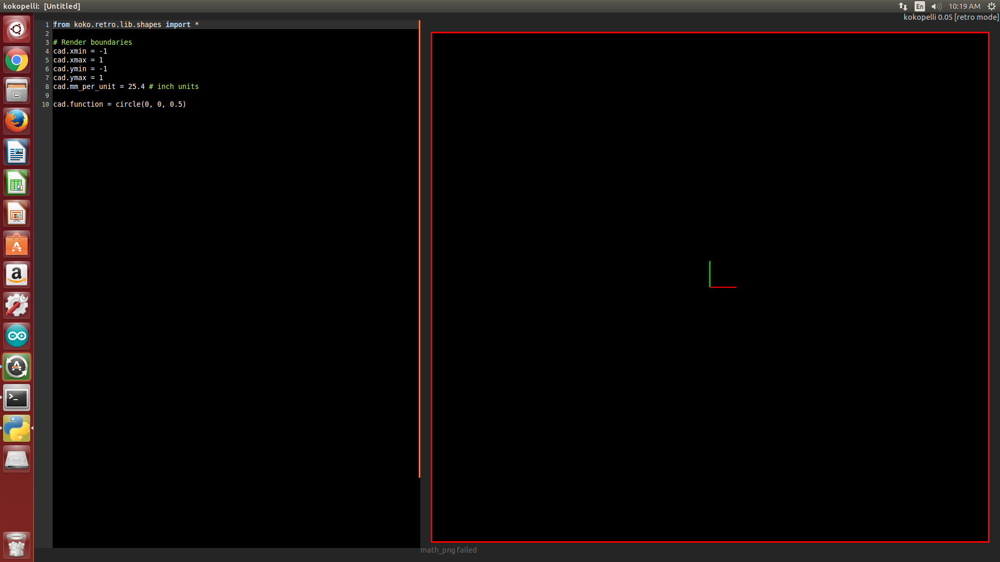

Week 4
Day 16 (9th Nov 2015)
From today onwards Mr Fransisco will be taking classes and training us while Luciano our first trainer will train the guys at Fablab Trivandrum. So it was swap between them. Frnsisco (alias Frank) reached in time. He set up his laptop and became ready to take the class.He introduced the kokopelli an opensource tool the design the PCBs , an alternative to eagle which i was using for longtime. He gave a link to download the source code. I downloaded it and extracted. There were some dependencies we should install, but it was already installed in my PC. So it was pretty simple.
Opened the terminal
change the directory to folder where it is extracted and typed the following commands
make clean
make fab
cd bin
./kokopelli -r
Now the kokopelli is opened. There were a sample code in it which was to draw a circle, but there were no circle as output.Something wrong!!

Then I noticed that there were no 'sudo' in the code, I tried with sudo.
sudo ./kokopelli -rOhh it works!!!
Eventhough i got the outup it was showing "root is not the owner of the file" in the terminal. It means there is no sudo needed for the kokopelli to run. Any way i went on with sudo since it was giving output.
Next i downloaded the ".cad" file made by Neil from http://academy.cba.mit.edu/classes/embedded_programming/index.html
I opened it in kokopelli. OMG!!! It was a code with 4000 lines. The functions for using almost the components in the fablab were defined in it. The chips , the resistors , wires , everything. A pcb for an isp programmer using Tiny44 is also there. So in the left side the code, and in the right side the pcb preview.
Frank showed us how to use it and how to add a component , how to allin it and how to connect it using wires. It was simple because all the functions for these things were already there.
I added an LED named led1 in the board which was already designed in kokopelli.The screens shots are here.
So we learnt to design a pcb using kokopelli. According to me, one problem with kokopelli as a pcb design tool is, the lack of autoroute. We have to join manually all the wires. If it is a complicated circuit then it is somewhat risk to draw the pcb manually. I think we should try to make a program for autoroute in kokopelli in future , when we get time.
Day 17 (10th Nov 2015)
Today we started with cleaning the lab. We cleaned all the tables and machine surroundings. Although we had done it last week , many things were not in place today. So we kept all the things in place.
Next, Frank asked to 3D print somthing to those who didnt do it already. Since i designed one and printed it last week itself i was doing some documentation when the other were printing